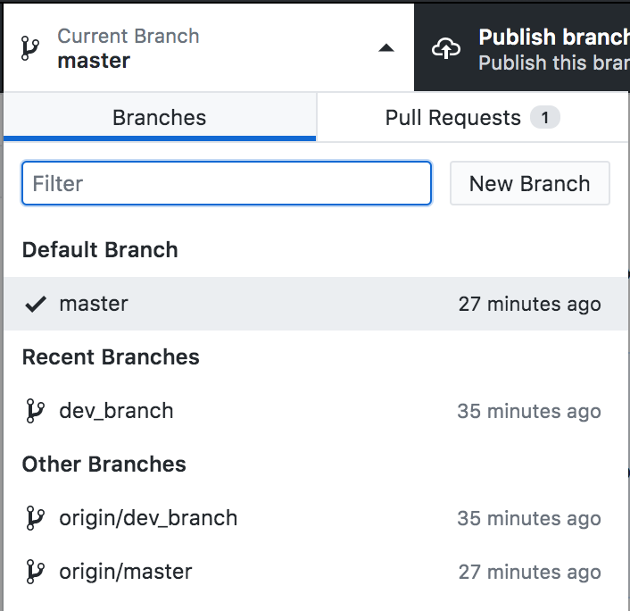
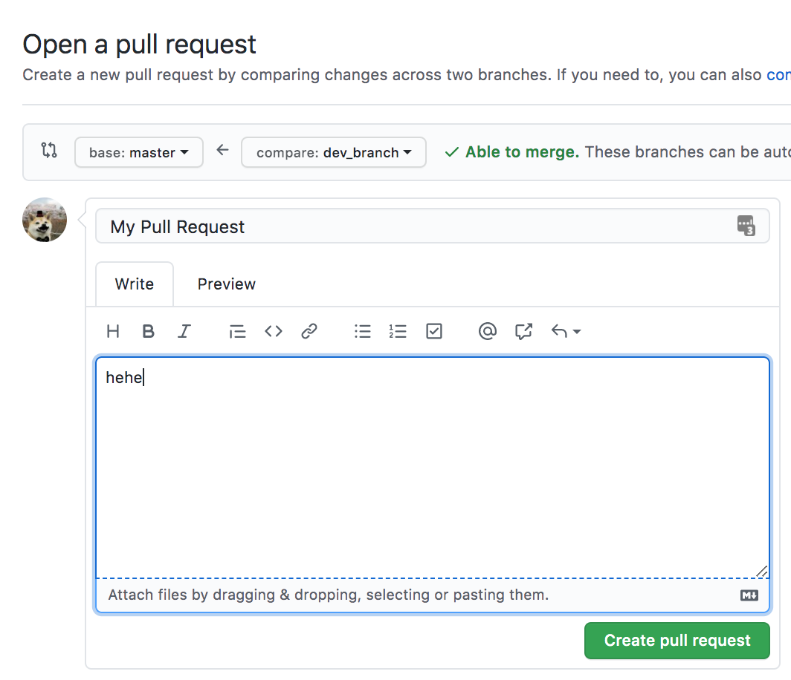
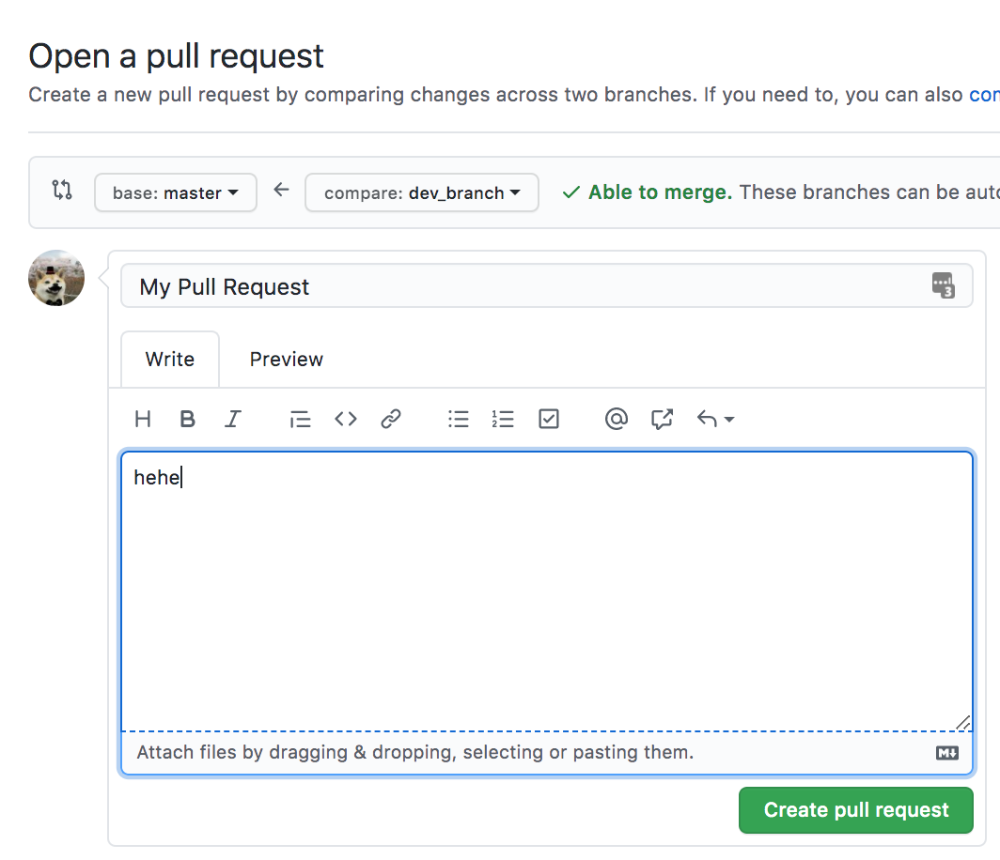

hub – brew
install hub
- the only* thing you can’t do with standalone
gitis create repositories

(Note: GitHub lets you host (static) webpages for all of
your projects, for free. The webpage associated
with this project is just an HTML document that I generated from
the README using pandoc.)
Imagine you’re working on a paper CancerEvolution.docx and you re-write a section but you’re not sure if you want to keep it. Therefore, you “Save As” under “CancerEvolutionRewrite.docx”. As you’re working on this you end up re-writing another section and “Save As” to create a slightly different copy. Or maybe you just create draft after draft and want to have different versions for later. You’re essentially creating different version of the same document and manually organizing them on your desktop! Not very effective though.
Take this up a level. We’re developing some bioinformatic sequencing software. Because we’re good developers, we write modular code and have many small files of code that we can re-use across the application. As we try out new algorithms, these files change and improve—but imagine trying to just send around the latest copy of these files or upload them all to Google drive—what if someone overwrites a copy of new changes with their own, older changes, and it breaks everything? We need stronger version control!
A version control system for code! Gone are the days of “FinalPaperDraft.docx”, “FinalPaperDraftFinal.docx”, “FinalPaperDraftFinalFinal.docx”.
“By far, the most widely used modern version control system in the world today is Git. Git is a mature, actively maintained open source project originally developed in 2005 by Linus Torvalds, the famous creator of the Linux operating system kernel. A staggering number of software projects rely on Git for version control, including commercial projects as well as open source.”
It’s extremely useful for tracking and undoing changes to your code over time, as well as sharing your code with others.
It’s a online platform that lets you store and version control your code. It’s built around Git. There are others like it, such as GitLab and BitBucket.
Good question. Git exists purely on the command line, and is maintained independently from these platforms. You don’t need to know the command line to use GitHub or GitLab, you just need to understand what version control is (and how to copy-paste)!
There are a few different ways!
hub – brew
install hub
git is create repositoriesAs a note, being a student gets you a premium version (Github Student Dev pack) of Github for free
It includes everything in GitHub Free, unlimited collaborators for private repositories, and advanced code review tools for private and public repositories.
Not only is it good for storing code and versioning it, it also is excellent for sharing your work. As you navigate through various pages on GitHub, you’ll find there is often a small writeup on some pages called the “README.md”. Whenever GitHub finds a file called README in a repository or folder of a repository, it will display that for you when you’re viewing it.
That little document often contains instructions to compile their code, information about the different parameters it takes, and even some examples! We’ll revisit this later.
hub command)When you want to grab someone’s repo, you don’t have to
just download the current code. You can git clone
the repo, which will give you an exact copy of its current
state.
This is how we publish and retrieve changes!
You push your local changes out to the repo, and then others can pull them in. Sometimes you’ve edited the same thing as someone else, and Git can’t figure out how to automatically combine them—this is when you’ll need to decide what to keep and what to toss. Situations like this can be frustrating when you’re working with other people, so sometimes it’s nice to have your own git workspace.
Want to start adding something new but don’t want to interfere with the stable code? Time to start a new branch! By default, you’re on the “master” branch.
Branches are useful for developing new features in isolation. Creating a new branch creates a copy of the old branch, but now you can grow it separately. When you’re done, you can splice that branch back into the main tree!
Here’s what it looks like in GitHub Desktop:

What is this splicing exactly? It’s the “merge” operation. Merging is best done when there aren’t conflicts between the new cold and the old code, but Git helps you handle conflicts when they arise.
This is one of the main strengths of GitHub—it’s very good at automatically merging when it can, and otherwise pointing out where the “merge conflicts” are, i.e., the places where you need to tell it what code to keep. Let’s do a quick example:
echo "original file contents" > my_file
git add my_file
git commit -m "added a new file"
git push origin master
Okay! We made some code.
git checkout -b dev_branch # swap to a new branch for dev
echo "a newly rewritten file" > my_file
echo "a cool change" >> my_file
git add my_file
git commit -m "rewrote first part, added more"
git push origin dev_branch
Now we have a dev branch with some new code. Could we merge this? Why or why not?
(yes! we could. dev changes would overwrite master. but let’s hold off on merging back in)
Further:
git checkout master
echo "a newer change" >> my_file
git add my_file
git commit -m "a newer change"
git push origin master
So what now? Can we merge? There’s an even newer change on Master that an overwrite would lose…
When you want to want to merge branches, you create a pull request. This is how GitHub handles merges (and you’ll find that command line Git isn’t very fun to do merges with when there are conflicts).
Let’s hop on GitHub and see if we can do our branch merge from before:


Let’s say you find a great package on GitHub that fits your use-case, but it’s written in Python 2 and has a few bugs. Let’s say that the owner of this package is pretty busy. So what do you do? We fix it our self and then make a pull request!
If you just clone someone’s repo, you’ll run into trouble when you try to push—you don’t have permission! Therefore, let’s fork it. On GitHub, this will create a copy of the repo under your account. Even if the owner deletes the original repo, you still have yours. Additionally, it’s easy to create a pull request from your fork of their repo!

These are both ways of adding on to the main code. There are some philosophical differences and Git-level differences between them.
I think it all comes together like growing a tree. All together, it’s a gradual process where you can curate designs and shapes with the wood. You can keep the blinds closed or let specific people into your house!
A Bed with Soil: Having a GitHub or GitLab account is having a place to grow your plant. It’s your soil.
A Seed: Creating the repo is like planting a seed—now you can watch it grow.
Taking up Nutrients…: Adding changes to your files! These are what you need to grow the project.
Growing Taller: Committing and pushing those changes to your project grows it. Commit after commit, the project grows bigger.
Branching: Very literal here. You’re growing out a new branch from the trunk. The trunk will continue to be the main part of the tree, but the branch can grow separately.
Splicing A Branch Back In: Merging! You’re reintroducing a branch that previously diverged. Now it’s part of the main tree again and brought back some changes with it.
This metaphor falls apart a bit once you start factoring in
other people. For example, what exactly is a merge conflict on a
bonsai tree? What is rebasing? There’s probably a joke about
cherry-picking here (a surprisingly useful git
command). But it’s still a useful starting analogy.
Complex and abstract. It’s essentially a giant python dictionary with a few different types of objects in it (tree objects, commit objects, and blobs). At the same time, it holds within it a graph structure. Most people use it for years and years without ever bothering with what’s going on underneath and, honestly, knowing how it is implemented won’t drastically improve your ability to work with it.
Let’s create a repository!
So let’s get started! GitHub has a few cute features with repos. Whenever you’re looking at a repo, if there’s a document named “README.*”, it will be displayed! The most common format is Markdown, which uses the extension “*.md”. It’s considered good practice to always include a README in the root of your repo with information about it, such as instructions on using it.
GitHub also has a few repository names that it can treat differently. For example, if you name a repo “[username].github.io”, GitHub will actually create a new address for you there, and you can create your own small, static website! Try visiting matthewwolff.github.io! Today, however, we’re going to create a different kind of specially named repo.

# Hey! üëª
* UW ➡️ Computer Science, Genetics & Genomics
* CMU ‚û°Ô∏è Computational üÖ±Ô∏èiology, Data Science


Go to GitHub on your profile again


 
 


This deserves it’s own little section, because you’ll typically want to use these. Generally you want to be careful about blindly adding folders in Git. Why? Because there’s probably some big or sensitive files in them somewhere that you don’t want to upload.
But adding things manually is so tedious… what if we could just specify what we want to ignore?
Enter .gitignore. This is a special file (at the
root of your repo) that git checks to remember what NOT to
consider when it’s checking what you’ve changed. It also
prevents certain files from being added when you add entire
directories. It’s very useful when you don’t want to upload
large data files, secret credentials, or small config files
created by your IDE!
git cloneIf you create your repo on GitHub first, you can copy the url
and use it with git clone
> git clone https://github.com/MatthewWolff/.sandbox
Cloning into '.sandbox'...
remote: Enumerating objects: 25, done.
remote: Counting objects: 100% (25/25), done.
remote: Compressing objects: 100% (14/14), done.
remote: Total 25 (delta 2), reused 20 (delta 1), pack-reused 0
Unpacking objects: 100% (25/25), done.
>
git
init and git remoteThis is how you create project locally if you already have existing code! You can copy the URL of the GitHub repo you created:
git init # create the .git folder
git remote -v # you have nowhere to send your changes!
git remote add origin https://github.com/MatthewWolff/.sandbox
git remote -v # origin is now set!
git statusGit will automatically evaluate which files have been changed, created, or deleted, and will then give you a quick report
> git status
On branch master
No commits yet
Untracked files:
(use "git add [file]..." to include in what will be committed)
README.md
images/
index.html
nothing added to commit but untracked files present (use "git add" to track)
git add --allA nice short-hand to add all the files at once! It’s recursive, so be careful
git commit -m "my
message"It’s important to have a descriptive message, especially if you’re working with other people. Saying “Fixed bug” isn’t very useful!
git pushGit is decentralized. Your repository is local until you make
it global. Use git push to send your changes off to
the repository
git pullIf you’re working on a project on a lab computer and a home computer and making changes from both, pull the changes that you pushed from the other computer! Also, if you’re working with other people you want to make sure you have the latest changes
git checkout
[filename]This one is good to know. If you want to undo all the changes that you made to a file, you can just “checkout” that file from the last commit. Very good for undoing mistakes or accidental changes
echo "i have created a repo on GitHub with this project name"
mkdir my_project && cd my_project
git init
git remote add origin https://github.com/matthewwolff/my_project
git status
echo "# My Project" >> README.md # create a change
git add --all
git commit -m "initial commit"
git push # publish it
rm README.md # oops
git checkout README.md # all better
Using Git correctly helps future you and your teammates
--force
.git/ folder will be bloated and
you’ll have to use a tool like bfg
to clean it outbfg
to fix this mistakeAt this point, you should feel like you know how to add and commit changes, as well as have a light grasp on what you shouldn’t do when using Git.
Almost every IDE (Integrated Developer Environment) that you use has git integration! For instance, Atom, IntelliJ, GoLand. It’s like a miniature GitHub desktop, except it’s not specific to GitHub!
Yes, there are actually a few, and the following list is not exhaustive:
I have dozens of bash aliases set up for certain git commands. It helps to not need to remember or worry about certain things, like which branch you’re on.
git whatchanged -p --abbrev-commit
--pretty=medium
diff of
the past commitsgit diff
git reset
git add a
filegit log --oneline --decorate --graph
git status -s
git [push/pull] origin "$(git_current_branch)"
git stash and git stash pop
git stash pop to pop them off the stash stack
(data structures!)git cherry-pick
git pull --rebase
git pull --rebase
is if you merged since your last push. You might want to
git fetch; git rebase -p @{u} (and check to
make sure the merge was recreated properly) or do a normal
merge in that circumstance.”Let’s talk about what you shouldn’t do, but might
find useful. These all have to do with re-writing history. As a
rule of thumb, you know that you’re doing something bad when
you have to use git push --force, so please keep
that in mind.
When you use the --force flag, that means your
local repo disagrees with the origin. However, if you haven’t
pushed yet, then you can manipulate
all your local commits however you want! That’s the ideal use
case for these.
git reset --hard [COMMIT HASH]
git loggit commit --amend: edit your last commit
message
git add [file] && git commit -v --no-edit
--amend
An alias I personally use a lot when I’m making lots of small adjustments to something I just pushed is:
If you use Oh-My-Zsh (I love
it) instead BASH and have the git plugin, you have
automatic access to a
plethora of git aliases. As a small plug, Oh-My-Zsh is a ZSH
framework that adds a ton of functionality to your terminal and
has lots of different shell
prompts or “themes”. Overall: Zsh + oh-my-zsh framework
will give you auto-completion, tab completion, several cool
themes, programming language integration and like bash is POSIX
compliant (I suggest you not learn anything that isn’t—it
won’t be generally portable knowledge).
You can try out my personal ZSH + oh-my-zsh set-up, which will also make the aliases available to you as long as you’re in ZSH: